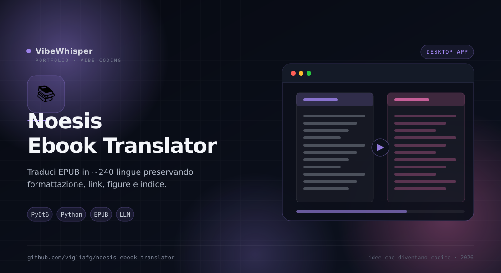

Noesis Ebook Translator
GUI desktop per tradurre ebook EPUB in un'altra lingua conservando formattazione, markup inline e indice. Il motore è preso verbatim dal plugin Calibre Ebook Translator.
📖 Cos'è
Noesis Ebook Translator è un front-end desktop snello per il motore di traduzione del plugin Calibre Ebook Translator di bookfere, copiato verbatim (GPLv3). Apri un EPUB, scegli motore e lingue, premi Traduci: ottieni un nuovo EPUB accanto all'originale con suffisso della lingua (libro_ITALIAN.epub), con formattazione, link e ancore, blocchi di codice, figure e indice preservati. Attorno al motore c'è un'app completa: lettore EPUB integrato, libreria persistente, valutazione della qualità, split/merge dei capitoli ed editor di testi e immagini.
👤 A chi serve
È lo strumento giusto per lettori forti, traduttori, studenti e ricercatori che vogliono leggere in italiano un libro acquistato in un'altra lingua senza perdere l'impaginazione, e per chi gestisce una libreria di EPUB e vuole tradurne interi volumi o singoli capitoli. Utile anche a chi confronta la qualità di motori diversi o deve produrre un'edizione bilingue per studio e revisione.
⚙️ Come funziona
Il motore è composto dai moduli verbatim del plugin (lib/, engines/, vendor/): gestisce gli elementi del libro, le richieste di traduzione, la cache e la configurazione. L'app PyQt6 aggiunge un ribbon (Home · Motore · Lingua · Opzioni · Info), la stima di token, costo e durata con tiktoken e i prezzi dei provider, e un'analisi del testo che propone istruzioni di stile. La cache su disco evita di ritradurre ciò che è già stato fatto; il batching online riduce le chiamate. Il lettore integrato usa foliate-js per EPUB, MOBI/AZW3, FB2, CBZ e PDF, con fallback leggero su QTextBrowser.
🎯 Perché Noesis Ebook Translator
Perché tradurre un ebook non è tradurre un testo: se il risultato perde il corsivo, l'indice o i link, il libro diventa scomodo da leggere. Noesis Ebook Translator mette al centro l'integrità dell'EPUB e ti lascia scegliere il motore — gratuito o LLM — con una stima dei costi prima di iniziare.
✨ Caratteristiche Principali
- Markup preservato — Link, ancore, blocchi di codice, corsivi, grassetti, figure e tabelle restano al loro posto
- Indice tradotto — Il TOC viene tradotto insieme al testo e mantenuto nella sua gerarchia
- Cache su disco — Le parti già tradotte non vengono richieste di nuovo: utile dopo un errore di rete o un'interruzione
- Stima prima di partire — Token, costo e durata stimati nel wizard con i prezzi reali del provider scelto
- Testo bilingue — Traduzione sotto o sopra l'originale, oltre alla modalità solo traduzione
- Lettore integrato — Indice multilivello, zoom, temi, ricerca, note e vista parallela originale/tradotto
- Libreria e capitoli — Database SQLite con copertine, ricerca, posizione di lettura e capitoli estratti o tradotti
- Qualità e revisione — Metriche automatiche più giudice AI, con report esportabile
- Split, merge, editor — Dividi o unisci capitoli e modifica testi, figure e tavole scrivendo direttamente nell'EPUB
🏗️ Come Funziona
- Apri l'EPUB dalla Home e controlla i metadati nel pannello Libreria
- Scegli il motore (Google gratuito, DeepL, Microsoft Edge o un LLM configurato) e imposta lingua di origine e destinazione
- Attiva eventualmente testo bilingue, cache e batching online nelle Opzioni
- Avvia la traduzione: l'avanzamento è mostrato per capitolo, con log e stato del lavoro
- Valuta la qualità, correggi con l'editor o esporta un'edizione di soli capitoli scelti
- Il file tradotto viene salvato accanto all'originale come
*_<LINGUA>.epub
📦 Installazione
# Requisiti: Python 3.10+ git clone https://github.com/vigliafg/noesis-ebook-translator.git cd noesis-ebook-translator python3 -m venv .venv .venv/bin/pip install -r requirements.txt .venv/bin/python main.py # Lettore completo (QtWebEngine) ed export DOCX: # .venv/bin/pip install -r requirements-full.txt
💡 Casi d'Uso
- Libreria personale — Leggere in italiano libri EPUB acquistati in inglese o in altre lingue
- Saggi e manuali — Tradurre testi lunghi conservando note, figure e indice
- Studio e ricerca — Produrre un'edizione bilingue per confrontare terminologia e passaggi
- Revisione qualità — Confrontare motori diversi sullo stesso capitolo e misurare il risultato